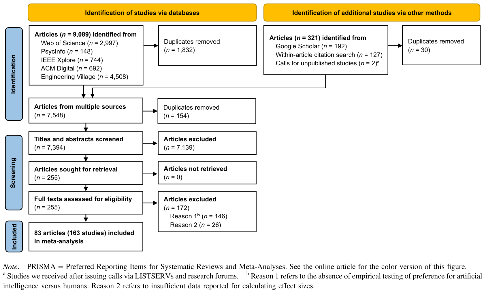
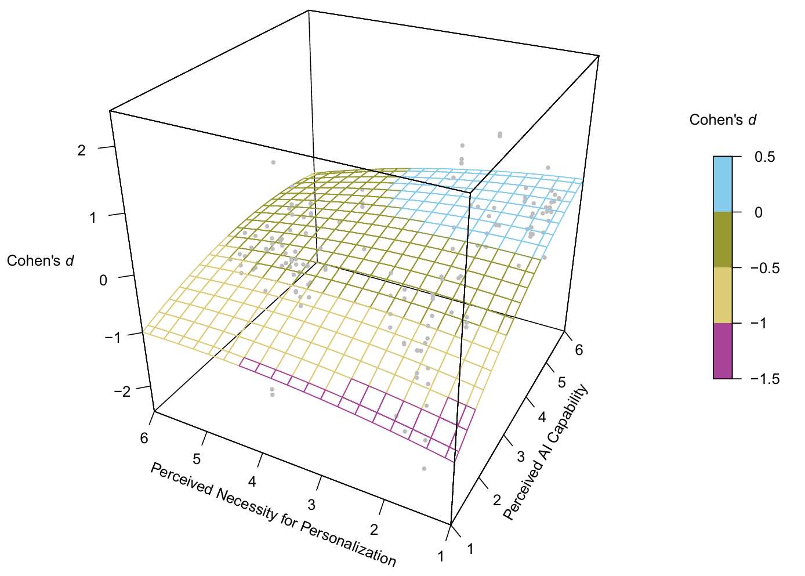
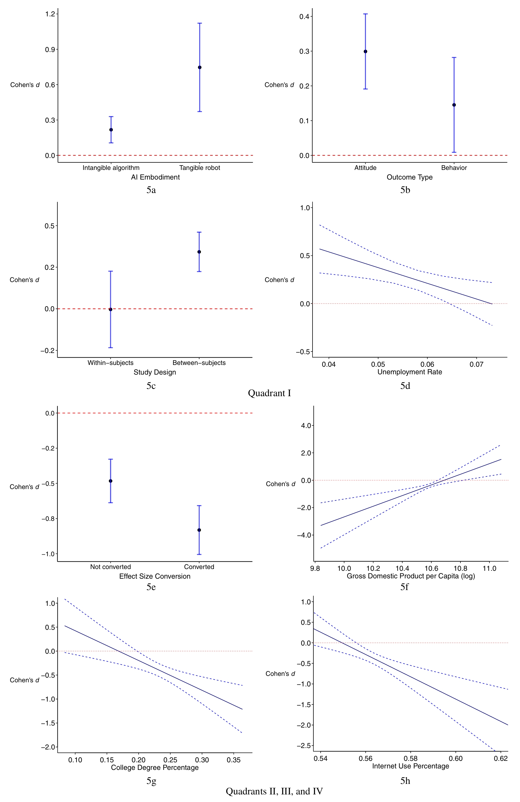
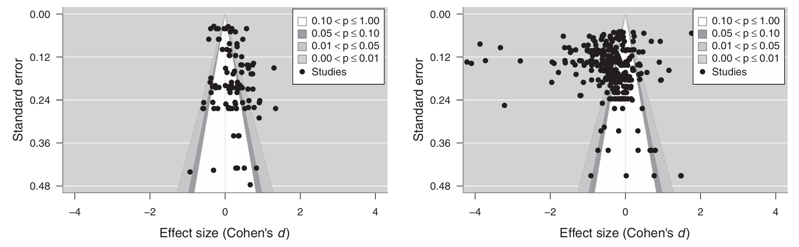

- AI厌恶（aversion）和AI欣赏（appreciation）存在差异
- AI厌恶：人们倾向于对AI表现出更多的消极态度和行为
- 医疗保健
- 人力资源管理
- 法律和军事等道德相关领域
- AI欣赏：人们倾向于对AI表现出更多的积极态度和行为
- 数字估计和预测任务
- 标准化分配任务
- 纸牌游戏
- AI厌恶：人们倾向于对AI表现出更多的消极态度和行为
- 现有综述不足
- 没有直接调查对AI的态度
- 没有提供适应不同领域的理论框架
- 没有研究调节变量
1 能力-个性化框架
- 图 1 是能力-个性化框架（Capability–Personalization Framework）
- 感知AI能力和感知个性化必要性是两个可以区分的维度
- 部分任务，无论个体对AI的能力是什么态度，都认为个性化是必要的
- 部分任务，即使情境相同，不同主体对个性化的要求也不一样
- 只有同时满足AI能力足够和任务不需要个性化时，才会出现AI欣赏
- 感知AI能力和感知个性化必要性是两个可以区分的维度
2 方法
2.1 透明和公开
- 遵循PRISRM 2020
- 数据和代码公开在https://osf.io/8skz6/
2.2 文献检索
- 2022年7月进行检索
- 数据库：Web of Science Core Collection、APA PsycInfo、IEEE Xplore、ACM Digital、Engineering Village
- 其他渠道：Google Scholar、文献内引用、公众呼吁未发表的研究
- 数据库检索策略，结合以下关键词：
- AI相关：“artificial intelligence” OR “AI” OR “A.I.” OR “algorithm” OR “robot” OR “autonomous vehicle” OR “machine learning”
- 人类相关：“human” OR “human being” OR “people” OR “person” OR “individual”
- 比较相关：“compare” OR “comparison”OR“contrast”OR“vs.”OR“versus”
- 表现相关：“prefer” OR “trust” OR “fair”
- Google Scholar检索策略，5*3关键词组合：
- AI与人类比较：“artificial intelligence vs. human”、“algorithm vs. human”、“robot vs. human”、“autonomous vehicle vs. human”、“machine learning vs. human”
- 对人类或AI的偏好：“prefer”、“trust”、“fair”
- 每组关键词浏览前100条结果
- 审核参考文献
- 通过LISTSERV和研究论坛（如Academy of Management、 Society for Personality and Social Psychology）发布未发表研究的征稿启事
2.3 纳入标准
- 英语
- 对AI和人类的偏好进行了实证研究
- 只关注AI和人类的直接比较，不包含关注AI某种特征
- 如果是被试内实验，排除未告知被试对象是AI还是人类的研究

2.4 决策情境编码
- 根据@fig-1 ，对文献决策情境的两个维度进行打分
- 感知AI能力
- 当在这种情境下做出决定时，与人类相比，AI的能力如何？
- 1 =“能力差得多”，6 =“能力强得多”
- 感知个性化必要性
- 当在这种情境下做出决定时，主体是否有（要求）个性化的必要性？
- 1 =“非常不必要”，6 =“非常必要”
- 13名编码人员独立完成了对93个情境的编码
- 根据 式 1 ，感知AI能力 \(r_{\mathrm{wg}}\) 均值和中位数均为0.89，感知个性化必要性也均为0.86，大于阈值0.5，说明不是随机作答
- 两个维度取编码人员的均值，以3.5为界限划分为高和低，组合成4个象限
2.5 调节因子
- AI特征
- 有形机器人 vs. 无形算法
- 研究特征
- 偏好的测量：行为 vs. 态度测量
- 被试间 vs. 被试内
- 研究质量
- 效应量转换
- 样本特征
- 女性比例
- 众包 vs. 其他样本
- 发表特征
- 发表状况
- 发表年份
- 国家或地区特征
- 失业率
- 人均GDP
- 大学学历比例
- 互联网使用率
2.6 统计过程
- 效应量全转换为Cohen’s \(d\)
- 442个效应量中，77个被转换
- 正 \(d\) 表示更喜欢AI，负 \(d\) 表示更喜欢人类
- 为综合被试间和被试内研究，用抽样方差倒数作为权重
- 使用稳健方差估计（robust variance estimation）来解决一个研究报告多个效应量的情况
- 使用随机效应元分析，使得研究结果可以更好地推广到纳入文献之外
- 使用R包metafor
- 移动常数技术（moving constant technique）
- 在元回归基础上，用图形或表格展示估计的平均效应量随调节变量变化的变化以及置信区间
- 本研究将其他调节变量恒定于均值水平，估计了不同研究特征和国家（地区）特征下的加权平均效应量及其置信区间
3 结果
3.1 研究特征
- 如 图 2 流程所示，共纳入83篇文献，163个研究，442个效应量
| 变量 | 频数或均值(标准差) | 中位数 | 众数(统计值) | 范围 | 研究数(n) | 效应量数(k) |
|---|---|---|---|---|---|---|
| AI特征 | ||||||
| 实体机器人vs无形算法 | 7.2%为实体机器人 | - | 无形算法 | 0或1 | 161 | 432 |
| 研究特征 | ||||||
| 行为结果vs态度结果 | 7.5%为行为结果 | - | 态度 | 0或1 | 163 | 442 |
| 被试间设计vs被试内设计 | 84.8%为被试间设计 | - | 被试间设计 | 0或1 | 163 | 442 |
| 研究质量 | -0.03(0.69) | -0.21 | -0.71 | -0.71~1.50 | 163 | 442 |
| 效应量转换 | 17.4%进行了转换 | - | 未转换 | 0或1 | 163 | 442 |
| 样本特征 | ||||||
| 女性占比 | 0.56(0.13) | 0.53 | 0.53 | 0~1 | 146 | 400 |
| 众包样本vs其他样本 | 49.1%为众包样本 | - | 其他样本 | 0或1 | 163 | 442 |
| 发表特征 | ||||||
| 已发表vs未发表 | 88.5%为已发表 | - | 已发表 | 0或1 | 163 | 442 |
| 发表年份 | 2018.37(4.97) | 2020 | 2021 | 2000~2022 | 163 | 442 |
| 国家特征 | ||||||
| 失业率 | 0.06(0.01) | 0.06 | 0.06 | 0.04~0.10 | 146 | 402 |
| 人均GDP(对数) | 10.63(0.37) | 10.72 | 10.72 | 8.33~11.08 | 146 | 402 |
| 大学学历占比 | 0.23(0.07) | 0.28 | 0.28 | 0.02~0.28 | 146 | 402 |
| 互联网使用率 | 0.57(0.05) | 0.57 | 50.57 | 0.25~0.64 | 146 | 402 |
| 样本量 | 332.33(1979.99) | 185 | 74 | 11~41592 | 163 | 442 |
3.2 测试AI厌恶 vs. AI欣赏的能力-个性化框架

- 图 3 中，正值表示AI欣赏；负值表示AI厌恶
- 整体Cohen’s \(d\) = -0.26，95% CI [-0.37，-0.15]，\(t(441)=-4.81\)，\(p<.001\)，AI厌恶但效应量并不算大
- 异质性（heterogeneity）检验表明：\(Q(441)=15350.05，p<.001\)；\(I^2=97.96\%\)，80%预测区间为-1.13到0.61
- 根据 图 1 ，以象限Ⅰ作为参照组进行元回归，结果如 表 2 所示
| 变量 | b | SE | t | p |
|---|---|---|---|---|
| 截距 = 象限Ⅰ（高AI能力、低个性化） | 0.27 | 0.09 | 3.01 | .003 |
| 象限Ⅱ（高AI能力、高个性化） | -0.72 | 0.18 | -3.90 | <.001 |
| 象限Ⅲ（低AI能力、高个性化） | -0.65 | 0.12 | -5.37 | <.001 |
| 象限Ⅳ（低AI能力、低个性化） | -0.96 | 0.13 | -7.17 | <.001 |
- 分象限进行元回归，结果如@tbl-3 所示
| 条件 | ksample | kes | N | d | SD | 95% CI | 80%预测区间 | I2 |
|---|---|---|---|---|---|---|---|---|
| 象限Ⅰ（高AI能力、低个性化） | 46 | 106 | 8784 | 0.27 | 0.31 | [0.17, 0.37] | [-0.14, 0.67] | 90.82 |
| 象限Ⅱ（高AI能力、高个性化） | 14 | 27 | 3400 | -0.43 | 0.18 | [-0.54, -0.32] | [-0.67, -0.19] | 66.02 |
| 象限Ⅲ（低AI能力、高个性化） | 53 | 184 | 15853 | -0.38 | 0.54 | [-0.53, -0.23] | [-1.09, 0.32] | 96.10 |
| 象限Ⅳ（低AI能力、低个性化） | 37 | 97 | 9805 | -0.69 | 0.90 | [-0.98, -0.39] | [-1.86, 0.48] | 98.19 |
- 象限Ⅰ表现出AI欣赏；其他象限表现出AI厌恶
- 合并象限Ⅱ、Ⅲ、Ⅳ，\(d=-0.50\)，\(k_{\text{sample}}=104\)，\(k_{\text{es}}=308\)，95% CI \([-0.63, -0.37]\)，\(t(307) = -7.36\)，\(p<.001\)，整体表现出AI厌恶
- 图 4 使用三维图展示了效应量的分布情况

3.3 稳健性检验
- 选择中位数进行象限划分，结果稳健
- 使用Cook’s距离和DFBETA值识别异常值，象限Ⅰ和Ⅱ无异常值，象限Ⅲ和Ⅳ分别有3个和5个异常值，去除后结果稳健
- 仅对高质量文献元分析，结果稳健
- 是否进行功效分析
- 是否进行预注册
- 是否报告被试排除情况
- 是否包含注意力测试
- 排除低于中位数的文献
3.4 调节分析
| 检验调节变量 |
模型1
|
模型2
|
||||||
|---|---|---|---|---|---|---|---|---|
| b | SE | p | 95% CI | b | SE | p | 95% CI | |
| AI特征 | ||||||||
| 有形机器人 vs. 无形算法 | 0.53 | 0.20 | .0095** | [0.13, 0.93] | 0.43 | 0.20 | .03* | [0.05, 0.82] |
| 研究特征 | ||||||||
| 行为 vs. 态度 | -0.15 | 0.06 | .0098** | [-0.27, -0.04] | -0.11 | 0.06 | .06 | [-0.23, 0.01] |
| 被试间 vs. 被试内 | 0.35 | 0.13 | .009** | [0.09, 0.61] | 0.26 | 0.13 | .04* | [0.01, 0.52] |
| 研究质量 | -0.01 | 0.09 | .89 | [-0.19, 0.17] | -0.02 | 0.09 | .84 | [-0.20, 0.17] |
| 效应量转换 | 0.09 | 0.14 | .51 | [-0.18, 0.36] | 0.05 | 0.14 | .73 | [-0.23, 0.33] |
| 样本特征 | ||||||||
| 女性比例 | 0.23 | 0.55 | .67 | [-0.84, 1.30] | 0.68 | 0.61 | .26 | [-0.51, 1.87] |
| 众包 vs. 其他样本 | 0.07 | 0.20 | .71 | [-0.31, 0.46] | 0.31 | 0.23 | .19 | [-0.15, 0.76] |
| 发表特征 | ||||||||
| 发表 vs. 未发表 | 0.12 | 0.19 | .52 | [-0.25, 0.50] | 0.10 | 0.21 | .63 | [-0.32, 0.52] |
| 发表年份 | -0.01 | 0.02 | .42 | [-0.05, 0.02] | -0.03 | 0.02 | .10 | [-0.06, 0.01] |
| 国家或地区特征 | ||||||||
| 失业率 | -16.38 | 6.24 | .009** | [-28.62, -4.14] | ||||
| 人均GDP（log） | -0.03 | 0.43 | .94 | [-0.88, 0.82] | ||||
| 大学学历比例 | -0.66 | 1.30 | .61 | [-3.20, 1.88] | ||||
| 互联网使用率 | -1.51 | 2.88 | .60 | [-7.15, 4.12] | ||||
| N | 8,383 | 8,286 | ||||||
| ksample | 37 | 36 | ||||||
| kes | 88 | 85 | ||||||
| 检验调节变量 |
模型1
|
模型2
|
||||||
|---|---|---|---|---|---|---|---|---|
| b | SE | p | 95% CI | b | SE | p | 95% CI | |
| AI特征 | ||||||||
| 有形机器人 vs. 无形算法 | 0.30 | 0.33 | .38 | [-0.36, 0.95] | 0.27 | 0.30 | .37 | [-0.32, 0.86] |
| 研究特征 | ||||||||
| 行为 vs. 态度 | 0.14 | 0.11 | .18 | [-0.07, 0.36] | 0.18 | 0.12 | .11 | [-0.04, 0.41] |
| 被试间 vs. 被试内 | -0.19 | 0.23 | .40 | [-0.64, 0.25] | 0.05 | 0.19 | .80 | [-0.32, 0.42] |
| 研究质量 | -0.12 | 0.11 | .29 | [-0.34, 0.10] | -0.06 | 0.10 | .57 | [-0.26, 0.14] |
| 效应量转换 | -0.35 | 0.06 | <.001*** | [-0.46, -0.24] | -0.35 | 0.05 | <.001*** | [-0.46, -0.24] |
| 样本特征 | ||||||||
| 女性比例 | -0.28 | 0.60 | .64 | [-1.45, 0.90] | -0.75 | 0.54 | .16 | [-1.81, 0.31] |
| 众包 vs. 其他样本 | -0.08 | 0.17 | .64 | [-0.42, 0.26] | 0.22 | 0.16 | .16 | [-0.09, 0.54] |
| 发表特征 | ||||||||
| 发表 vs. 未发表 | 0.30 | 0.25 | .24 | [-0.20, 0.80] | 0.27 | 0.23 | .23 | [-0.17, 0.72] |
| 发表年份 | 0.03 | 0.02 | .12 | [-0.01, 0.08] | -0.004 | 0.02 | .82 | [-0.04, 0.03] |
| 国家或地区特征 | ||||||||
| 失业率 | 12.95 | 7.71 | .09 | [-2.16, 28.07] | ||||
| 人均GDP（log） | 3.89 | 1.12 | <.001*** | [1.70, 6.08] | ||||
| 大学学历比例 | -6.21 | 1.86 | <.001*** | [-9.85, -2.57] | ||||
| 互联网使用率 | -27.14 | 7.30 | <.001*** | [-41.44, -12.84] | ||||
| N | 26,357 | 21,882 | ||||||
| ksample | 95 | 80 | ||||||
| kes | 277 | 243 | ||||||

注释
本节，AI欣赏象限特指象限Ⅰ，AI厌恶象限特指象限Ⅱ、Ⅲ、Ⅳ综合
3.4.1 AI特征
3.4.2 研究特征
3.4.2.1 行为和态度
- 态度强烈但行为保守
- AI欣赏象限中，AI欣赏在态度条件下更明显
- AI厌恶象限中该变量不显著
3.4.2.2 被试间和被试内
- AI欣赏象限中，AI欣赏在被试间条件下更明显
- AI厌恶象限中该变量不显著
3.4.2.3 研究质量
- 在两种象限中均不显著
3.4.2.4 效应量转换
- 1 = 已转换，0 = 未转换
- AI欣赏象限中该变量不显著
- AI厌恶象限中，AI厌恶在已转换效应量的研究更明显
3.4.3 样本特征
- 女性比例和样本来源，在两种象限中均不显著
3.4.4 发表特征
- 是否发表和发表年份，在两种象限中均不显著
3.4.5 国家或地区特征
- 在AI欣赏象限中，失业率越高，AI欣赏水平越低；AI厌恶象限中该变量不显著
- 高失业率国家或地区，人们更担心被AI取代工作
- 在AI欣赏象限中，人均GDP不显著；AI厌恶象限中，AI厌恶在人均GDP较高的国家或地区中显著降低
- 在AI欣赏象限中，大学学历比例和互联网使用率均不显著；AI厌恶象限中，两变量高的国家或地区AI厌恶显著更高
3.5 发表偏倚

3.5.1 AI欣赏象限
- 图 6 左图是AI欣赏象限的结果
- Egger检验结果不显著，表明对称（\(t=1.73，p=.08\)）
- 元回归中发表特征两个变量均不显著
- 精准效应检验（precision-effect test，PET）也不显著（\(b = 0.48，SE = 0.55，p = .38\)）
- 均说明不存在发表偏移
3.5.2 AI厌恶象限
4 讨论
4.1 理论和实证贡献
- 能力-个性化框架很好的解释了AI厌恶和AI欣赏
- 人们对AI态度上的欣赏未必能转化为行为上的AI接受
- 需要开展跨学科研究，探究AI具身化如何塑造AI偏好
- AI可能加剧不同失业率国家之间的经济不平等
4.2 实践贡献
- 开发者应考虑具体情境
- 用户应培养对AI的平衡看法，不要让偏见影响认知
4.3 局限与未来方向
- 能力-个性化框架不能解释所有影响因素
- 单一题目测量每个维度是方法上的局限
- 进行了分析性和情绪性的编码，但解释效果不如能力和个性化
- 2022年11月，ChatGPT的发行可能对结果有较大影响
- 调节变量取值不均匀，尤其是未发表数据远少于已发表
- 样本可能不具有全国代表性，且缺少非WEIRD和非英语国家
- 其他调节变量未考虑到
- 元分析表示相关而不是因果
- 未进行预注册，很多分析是在审稿人建议下进行，为了需要进行重复验证
4.4 结论
- 人们认为AI比人类能力更强且个性化被认为不必要时，AI欣赏才会出现
- 其他情况会出现AI厌恶
参考文献
James, L. R., Demaree, R. G., & Wolf, G. (1984). Estimating within-group interrater reliability with and without response bias. Journal of Applied Psychology, 69(1), 85–98. https://doi.org/10.1037/0021-9010.69.1.85
Qin, X., Zhou, X., Chen, C., Wu, D., Zhou, H., Dong, X., Cao, L., & Lu, J. G. (2025). AI aversion or appreciation? A capability–personalization framework and a meta-analytic review. Psychological Bulletin, 151(5), 580–599. https://doi.org/10.1037/bul0000477